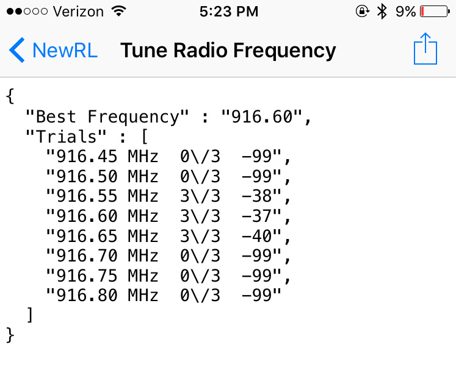

RileyLink
Tuning the Radio
The RileyLink communicates with the pump through radio frequency communications. Numerous factors can influence how well those communications can function...interferences from other devices, temperature, physical blocking, etc.
Knowing a little about the strength of the radio communications will help you troubleshoot Loop errors. When you Tune Radio Frequency in the Riley Link menu, it is testing for the strongest frequency to communicate with the pump. Usually this frequency is pretty constant, but during temperature changes it may be that the best frequency is not the one currently set. The tuning results also show which frequency is the strongest.
For example, in the screenshot below, the strength of the radio communications with the pump is shown by the last number of the tune. Frequencies with tuning results of -99 means NO communications were established at that frequency. RileyLink will use the strongest frequency tune for its pump communications. In the screenshot, the best frequency returned a result of -37 at a frequency of 916.60 MHz, so RileyLink will set that 916.60 MHz for its pump communications.

Generally, if you have tuning in the -90s, your RileyLink-pump communications will not work. If you have tuning in the -80s, you may have periodic communication failures. If your tuning is in the -70s or better, your communications should be pretty stable.
Experiment with your RileyLink by moving it closer and farther away from the pump. Try putting it on the other side of your body, or put it in a purse. Test the tuning results in real world situations that you think you'd be encountering, such as where you will have the RileyLink placed during overnight charging. Perform tunes at the various distances and situations. This will help you understand how far from the pump your RileyLink can get before it will affect Loop performance.
Bluetooth
RileyLink communicates with your iPhone and Loop app through Bluetooth (BT). If your iPhone has BT issues, your Loop will have failures. There have been reports of BT audio devices (such as BT pairings in your car or home audio BT speakers) interfering with the Loop. If you are finding Loop failures frequently happening at a particular location, you may try to troubleshoot if there are BT problems in the area.
Your BT signal strength can be seen in the Loop settings, under the RileyLink menu, on the Signal Strength line. As you move closer and further away from your phone, you can watch that number dynamically change. This line is not displaying the signal strength of your pump communications discussed above (those are shown in the tuning results screen).
Lights
RileyLink has several lights that you may notice from time to time. There is no 'power' light. If you suspect that your RileyLink is not being powered, try turning it off and on using the small sliding switch. You should see lights in the middle of the board flash when you do this. If they flash, that means the board has power.
-
Red light: Charging light. The red light will remain on while RileyLink is charging, and it will turn off when charging is complete. You may notice the red light turn on periodically even after charging is complete...it's just "topping off".
-
Green light: Bluetooth connection light. The green light will remain on while you have BT connection with your iPhone. If that green light fails to stay on, you should troubleshoot your BT connections. Try restarting BT on your iPhone and/or turning the RileyLink off/on by its power switch.
-
Blue light: Pump communications. If you have an older firmware on your RileyLink, some of the blue and green lights will flash periodically as it is communicating with the pump. It's just letting you know that it is busy talking and collecting info.
Charging
The battery that comes with RileyLink will easily last a full day of constant Loop use. Typically, it can go into the 30-hour range without problem. Most people charge their RileyLink each night when they are sleeping. You don't have to worry about leaving the RileyLink plugged in "too long" for charging. It will automatically stop charging the battery when it is fully charged.
Range
The range that your RileyLink will function is heavily dependent on the environment that you are in. Read the section about Tuning to help determine how far your RileyLink can dependably maintain an adequate signal strength in your particular environment. Most people wear the RileyLink in a pocket or carry a belt holster during the day. Typically, RileyLink will need to be closer to the pump than the iPhone. The radio frequency communications will have a shorter range than the BT communications.
Lipo Battery
If you ordered your RileyLink preassembled, you should plug in the battery cable. Please make sure your RileyLink’s battery cable is securely pushed all the way into the socket. Poor battery cable connection can make the Loop communications fail.


Keep your RileyLink and lipo battery protected from damage. Lipo batteries are unsafe when damaged or punctured, so the case is an important part of safe Looping. If your battery is damaged in some way, please disconnect it immediately, and dispose of it (they should be recycled). You can order new batteries on the GetRileyLink website